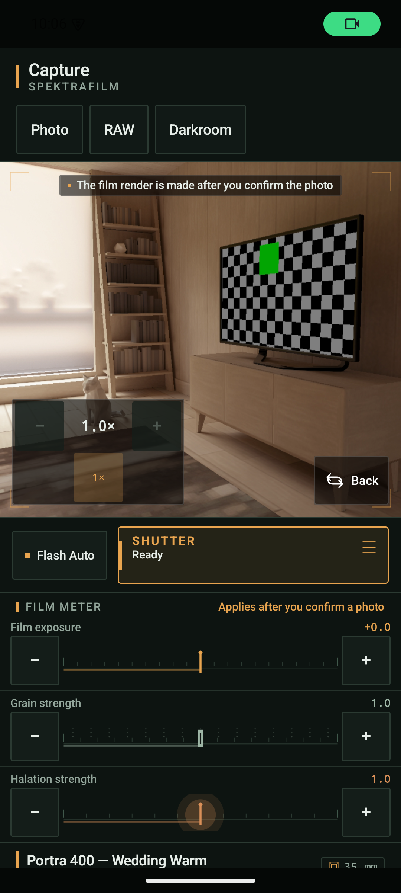

原生变焦，参数真正生效
双指缩放与 CameraX 实际倍率回读；曝光、颗粒和光晕提供明确加减控制。零颗粒／零光晕真正关闭对应阶段，手动 EV 在预览和导出中保持一致。
OPEN SOURCE · ANDROID 7.0+
不是给照片蒙上一层滤镜，而是让光谱穿过负片、放大机、相纸与扫描仪。取景、选卷、调整与拍摄在同一页完成，所有处理都在你的手机上离线进行。
v0.13.0 (16)测试证书签名无 INTERNET 权限

这一版带来的改变
双指缩放与 CameraX 实际倍率回读；曝光、颗粒和光晕提供明确加减控制。零颗粒／零光晕真正关闭对应阶段，手动 EV 在预览和导出中保持一致。
白框／黑框与日期时间直接进入成片和导出缓存。全部 20 款拍摄胶片都有独立扁平插画，迫冲和电影卷保留各自标识，不再使用产品摄影。
照片、RAW、暗房与前后摄不再只靠小图标猜测。专业暗房保留 RAW、曲线、蒙版与事务导出；诊断记录仅保存在本地，可主动复制或分享。
下载与安装
这是供实际体验与反馈的测试版本，不是应用商店正式上架版。安装前请阅读下面的兼容性说明。
下载 SpektraFilm-CN-workbench.apk 查看 Release 与 SHA256SUMS854f74557c80bc21ad71c6bc019cf64b3df6476cdc4343bd0b6248602e242cf1
诚实说明测试边界